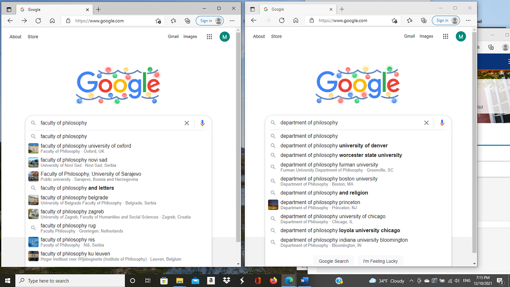
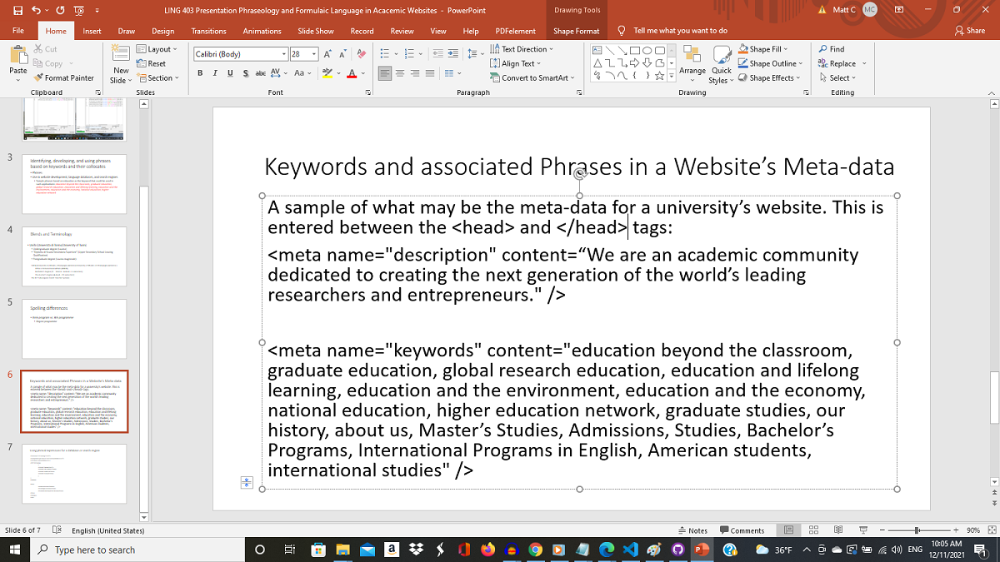
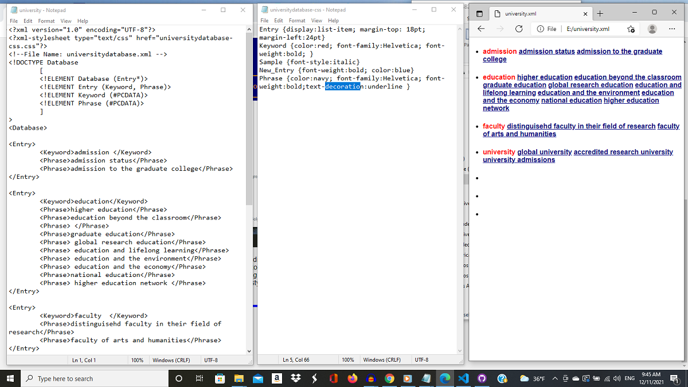

| About Phonetics and Phonology Morphology Syntax Typology |
Language Technology and Corpora |
Blog Resources |
Three areas of interest to me in Language Technology are: Digital Lexicography (digital dictionaries), language database and search engine development, and keywords and their associated phrases and their place in website commerce (as in search results in search engines and online business).
Language Technology and Corpora/Corpus Linguistics is a field which has really blossomed as computer technology has become more advanced and accessible. We can now gather, process, analyze, and learn from vast amounts of language data very easily and quickly. This screenshot demonstrates this concept. Here I did two searches, one using the term "faculty of philosophy" and the other "department of philosophy". As you can see by the locations of universities, the two terms can determine which results will appear. Website meta data can help Google determine sites it will detect. It is evident from this one example that European universities use the term "faculty" in a similar manner to how American universities use "department."
Which phrase a user enters will determine a lot of the results in a search. My primary interest in Language Tech/Corpus linguistics has been in making searches more efficient and linguistically broader or more inclusive. Consider if a European person is considering an American university to study philosophy. The hits using the European term won't do much good, but American universities can improve search results if they include European terms in the meta data in a website's programming. This meta data is used by search engines to produce more efficient results. This is part of my presentation on keywords and phrases and how they are integrated into a website's meta-data. If you want to give your website specific meta-data that may help people searching find your site, you can add a meta-data section between the head tags. Just replace this university language with words and phrases specific to your website's subject matter.
If you're having trouble deciding what terms or phrases are most frequent in your site's language, you can save all text in a file and run it through a processor that will rank words by fruquency and show in a concordance other associated words to help you develop phrases that can be used in your website's meta-data. One such language processor is called AntConc; we have been using this in LING 403-Corpus Linguistics. For this project, I've used the Windows 64-bit (3.5.9) version.
For the digital lexicography course I focused on designing an online interactive dictionary that featured audio files and images. For this project, I had to familiarize myself with four coding languages: HTML, CSS, XML, and JavaScript. This semester in Corpus Linguistics, I've used XML and CSS to construct a simple database of keywords and associated phrases. XML and CSS can be used to make simple databases. XML allows you to make your own tags that can be specific to the subject you are working with (for example, since I'm working with keywords and phrases, two tags I made are < Keyword > and < Phrase >). XML's syntax is similar to HTML, but an XML file has to have an associated stylesheet to display the data in a browser. I'll provide some screenshots and explanations of my work in this section....
The following image shows the XML file, associated style sheet, and browser view of keywords and phrases I have been developing in my research of academic keywords and phrases on university websites. Should I ever be working with adding meta data to a university website, I can refer to this database to help me come up with keywords and phrases appropriate to such a website.
